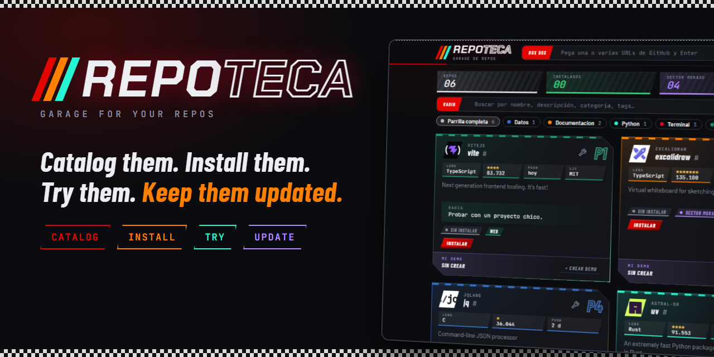
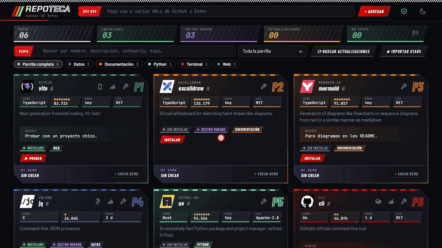
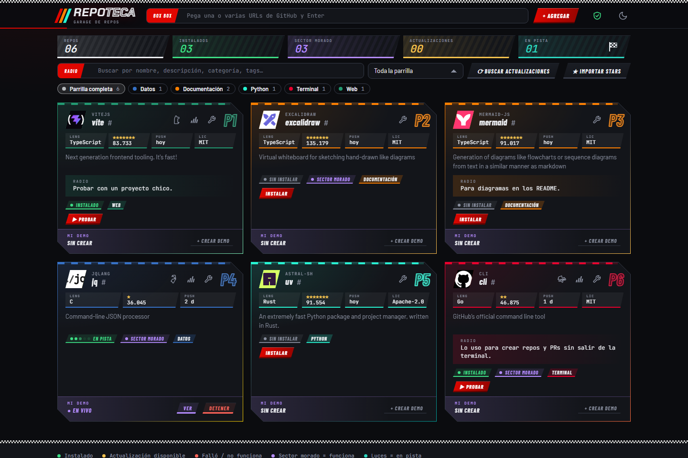
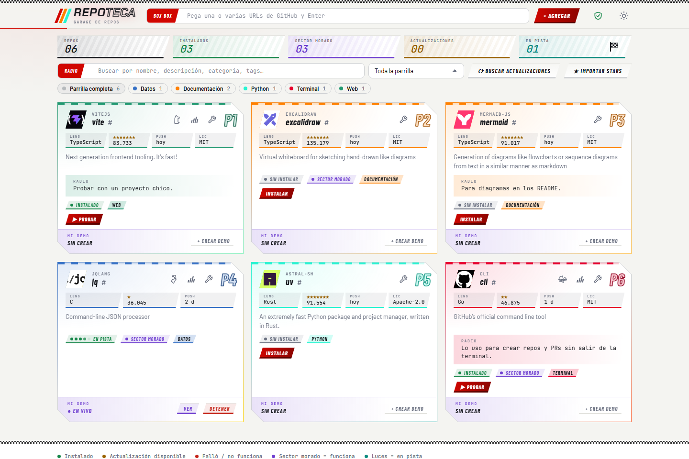

Catalog them. Install them.
Try them. Keep them updated.Cataloga. Instala.
Prueba. Mantén al día.
A garage for your GitHub repos. Paste a URL and Repoteca indexes it, installs it on demand, runs it so you can try it, and tells you when it has news. Everything is local. Un garage para tus repos de GitHub. Pega una URL y Repoteca la indexa, la instala cuando quieras, la ejecuta para que la pruebes y te avisa si tiene novedades. Todo corre en local.
$ git clone https://github.com/awarefractal/repoteca.git && cd repoteca && npm start
Needs Node.js 20+ and git. No npm install: there are no dependencies.Requiere Node.js 20+ y git. Sin npm install: no tiene dependencias.

From URL to installedDe la URL a instalado
Paste a GitHub URL, tag it with racing-style tags and install it, all from the catalog.Pega una URL de GitHub, ponle tags de pista e instálalo, todo desde el catálogo.

What it doesQué hace
One small local app instead of clones scattered over your disk.Una app local y pequeña, en vez de clones desparramados por el disco.
CatalogCatálogo
Paste one or many URLs. Description, stars, language and license come from GitHub; add your own category, tags, notes and verdict.Pega una o varias URLs. Descripción, estrellas, lenguaje y licencia vienen de GitHub; tú agregas categoría, tags, notas y veredicto.
Safe installInstalación segura
Cloning runs nothing. Before npm install or pip install, you see the exact command and folder and confirm.Clonar no ejecuta nada. Antes de npm install o pip install ves el comando y la carpeta exactos y confirmas.
Try it livePruébalo en vivo
Launch a repo and see it in a side panel, with its log next to it. One checkered flag stops everything that is running.Levanta un repo y míralo en un panel lateral, con su registro al lado. Una bandera de cuadros detiene todo lo que corre.
Stay updatedAl día
Compares each local commit with GitHub and updates with git pull --ff-only.Compara cada commit local con GitHub y actualiza con git pull --ff-only.
Import your StarsImporta tus Stars
Bring in everything you have starred in one go, without installing anything.Trae de golpe todo lo que marcaste con estrella, sin instalar nada.
Your own demosTus propias demos
Keep your test of each repo outside the clone, so updates never overwrite it.Guarda tu prueba de cada repo fuera del clon: actualizar nunca la pisa.
Claude Code · MCP
The same data is exposed through an MCP server: "add this URL", "what do I have about AI?", "install and try X".Los mismos datos salen por un servidor MCP: «agrega esta URL», «qué tengo de IA», «instala y prueba X».
Local and privateLocal y privado
No telemetry, no database, zero dependencies. Your catalog is one readable JSON file in data/.Sin telemetría, sin base de datos, cero dependencias. Tu catálogo es un JSON legible en data/.
Dark and lightOscuro y claro
It follows your system theme and you can switch it from the header.Sigue el tema de tu sistema y lo cambias desde la cabecera.


Why it existsPor qué existe
I star repos much faster than I try them. They pile up in a Stars list I never reopen, or as clones scattered over my disk, half installed and forgotten. Repoteca is the garage I wanted: every repo with a status, my own notes and verdict, a demo that survives updates, and a button to try it that I can stop with one click. It is local-first and dependency-free on purpose: small enough to read in an afternoon and to trust.
Marco con estrella muchos más repos de los que alcanzo a probar. Se acumulan en una lista de Stars que no vuelvo a abrir, o como clones desparramados por el disco, a medio instalar y olvidados. Repoteca es el garage que quería: cada repo con su estado, mis notas y mi veredicto, una demo que sobrevive a las actualizaciones y un botón para probarlo que detengo con un clic. Es local y sin dependencias a propósito: lo bastante pequeño para leerlo en una tarde y confiar en él.